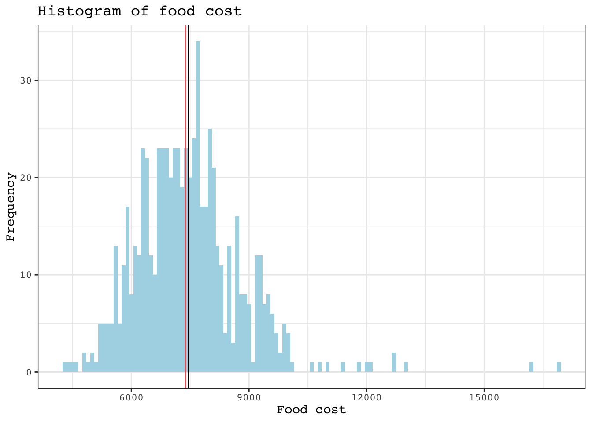
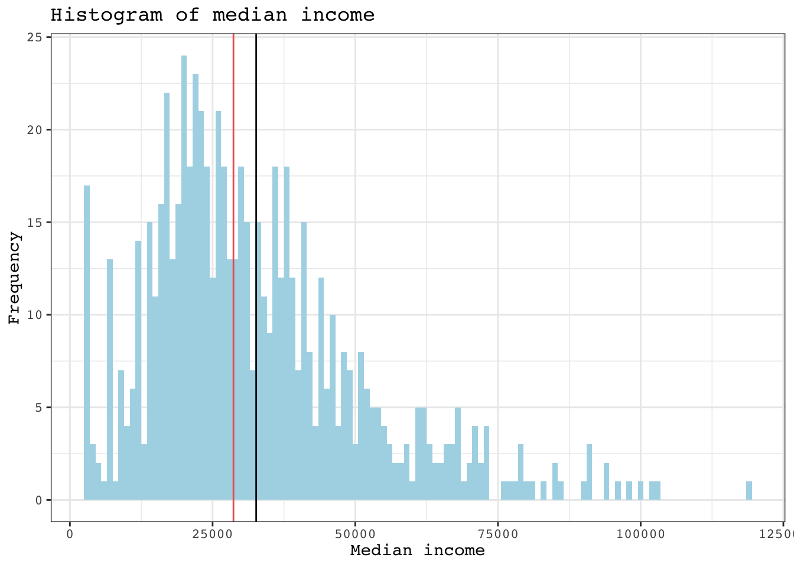
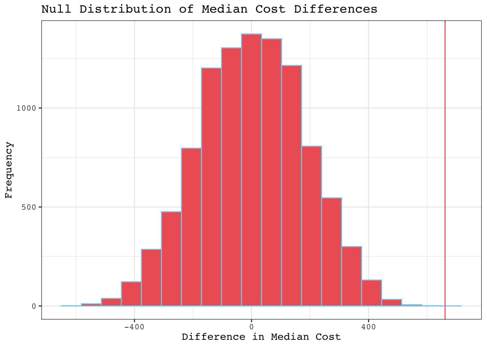
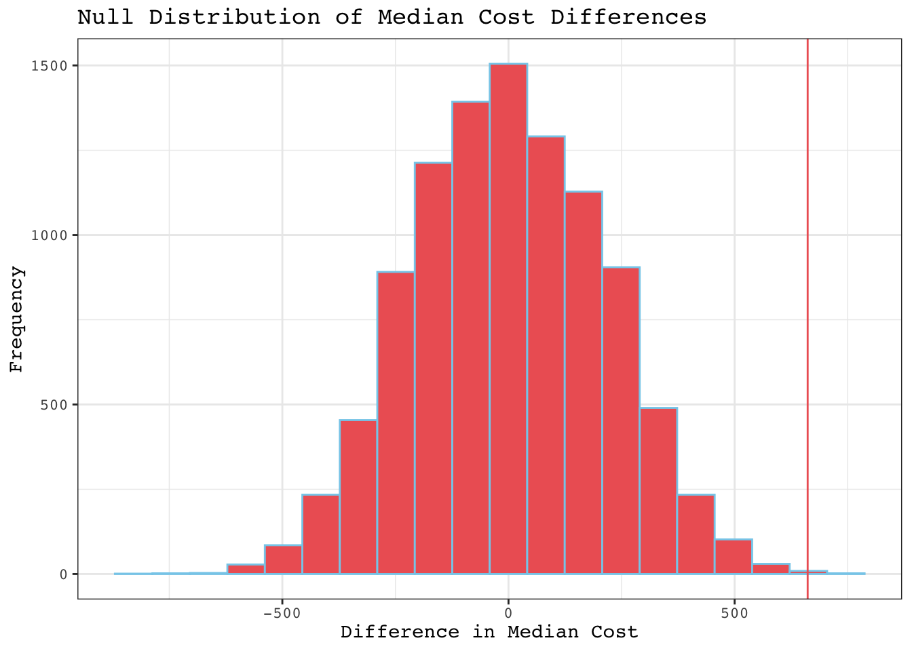
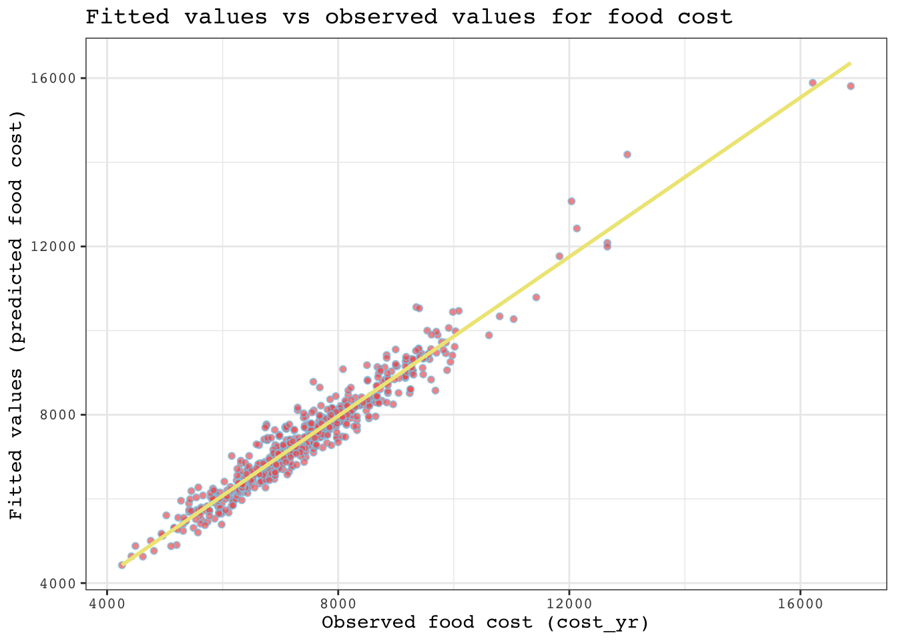
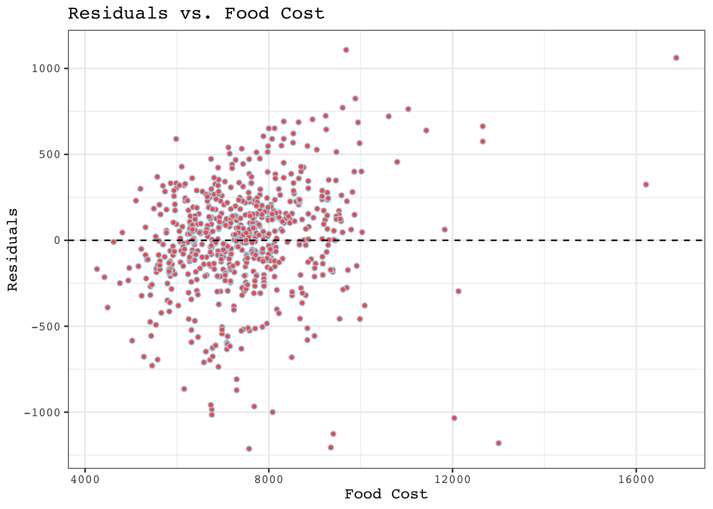

library(tidyverse)
library(ggplot2)
library(here)
library(kableExtra)
library(car)
library(broom)What are the major predictors of food security and affordability in California?
More specifically, how do regional and socioeconomic factors influence food costs in female-headed households?
food <- read_csv(here("data","food_affordability_2006_2010.csv"))
counties <- read.csv(here("data","california_counties.csv"))Data Cleaning
Drop NAs for median income and visualize min and max to see if outliers must be removed
food <- food %>%
filter(!is.na(median_income)) %>% # removed all median_income NAs as they are crucial for lm
select(-region_name) %>% # removed MPO region names
filter(race_eth_name == c("Total","Latino","White","AfricanAm"))
summary(food$cost_yr) Min. 1st Qu. Median Mean 3rd Qu. Max.
4258 6652 7317 7441 8068 16872 summary(food$median_income) Min. 1st Qu. Median Mean 3rd Qu. Max.
2500 20000 29410 35295 42875 250000 food <- food %>%
filter(median_income < 120000) %>% # remove outliers, several in the 200000s
mutate(log_income = log(median_income))Reclassify counties into 5 regions, not 15
superior <- c("Butte","Colusa","Del Norte","Glenn","Humboldt","Lake","Lassen","Mendocino","Modoc","Nevada","Plumas","Shasta", "Sierra","Siskiyou","Tehama","Trinity")
central <- c("Alpine","Amador","El Dorado","Fresno","Inyo","Kings","Madera","Mariposa","Merced","Mono","Placer","Sacramento","San Joaquin","Stanislaus","Sutter","Yuba","Tulare","Tuolumne","Yolo", "Calaveras")
bay_area <- c("Almeda","Contra Costa","Marin","Monterey","Napa","San Benito","San Fracisco","San Mateo","Santa Clara","Santa Cruz","Solano","Sonoma")
southern <- c("Imperial","Kern","Orange","Riverside","San Bernardino","San Diego","San Luis Obispo","Santa Barbara","Ventura")
los_angeles <- "Los Angeles"
region_mapping <- data.frame(
county_name = c(superior, central, bay_area, southern, los_angeles),
region_name = rep(c('superior', 'central', 'bay_area', 'southern','los_angeles'),
times = c(length(superior), length(central), length(bay_area), length(southern),length(los_angeles))))
food <- inner_join(food,
region_mapping,
by = "county_name")Histograms to visualize data
# Create histogram for food cost
cost_hist <- ggplot(food, aes(x = cost_yr)) +
geom_histogram(binwidth = 100, fill = "lightblue") +
labs(title = "Histogram of food cost",
x = "Food cost",
y = "Frequency") +
theme_bw() +
theme(text = element_text(family = "courier"),
panel.background = element_rect(fill = "white")) +
geom_vline(aes(xintercept = mean(cost_yr)),
color = "black",
lwd = 0.5) +
geom_vline(aes(xintercept = median(cost_yr)),
color = "indianred2",
lwd = 0.5)
cost_hist
# Create histogram for income
income_hist <- ggplot(food, aes(x = median_income)) +
geom_histogram(binwidth = 1000, fill = "lightblue") +
labs(title = "Histogram of median income",
x = "Median income",
y = "Frequency") +
theme_bw() +
theme(text = element_text(family = "courier"),
panel.background = element_rect(fill = "white")) +
geom_vline(aes(xintercept = mean(median_income)),
color = "black",
lwd = 0.5) +
geom_vline(aes(xintercept = median(median_income)),
color = "indianred2",
lwd = 0.5)
income_hist
Testing the null hypothesis
Null Hypothesis (H0): Region does not have a significant effect on food cost.
Alternative Hypothesis (H1): Region does have a significant effect on food cost.
cost_by_region <- ggplot(food, aes(x = region_name, y = cost_yr, fill = region_name)) +
geom_bar(stat = "summary",
fun = "mean",
color = "black",
fill = c("indianred2",
"skyblue",
"khaki2",
"hotpink",
"seagreen3"),
show.legend = FALSE) +
labs(title = "Average Food Cost by Region",
x = "CA region",
y = "Average Food Cost") +
theme_bw() +
theme(text = element_text(family = "courier"),
axis.text.x = element_text(angle = 45, hjust = 1),
plot.title = element_text(face = "bold"))
cost_by_regioncost_summary <- food %>%
group_by(region_name) %>%
summarize(median_cost = median(cost_yr, na.rm = TRUE))
# Calculate the point estimate of the difference in median income between two regions
point_estimate_cost <- cost_summary$median_cost[2] - cost_summary$median_cost[1]
point_estimate_cost # the diff between 2 regions[1] 661.4388Randomization test
# Set the seed for reproducibility
set.seed(123)
# Create the null distribution with 1000 permutations
null_dist_1 <- replicate(10000, {
shuffled_data <- food %>%
mutate(cost_yr = sample(cost_yr, n()))
shuffled_summary <- shuffled_data %>%
group_by(region_name) %>%
summarize(median_cost = median(cost_yr, na.rm = TRUE))
point_estimate <- shuffled_summary$median_cost[2] - shuffled_summary$median_cost[1]
point_estimate
})
observed_point_estimate <- point_estimate_cost
# plot the null distribution
region_1_2 <- ggplot(tibble(null_dist_1), aes(null_dist_1)) +
geom_histogram(bins = 20, color = "skyblue", fill = "indianred2") +
geom_vline(xintercept = observed_point_estimate, color = "indianred2") +
ggtitle("Null Distribution of Median Cost Differences") +
xlab("Difference in Median Cost") +
ylab("Frequency") +
theme_bw() +
theme(text = element_text(family = "courier"))
region_1_2
Regions 3 & 4
# Set the seed for reproducibility
set.seed(123)
# Create the null distribution with 1000 permutations
null_dist_2 <- replicate(10000, {
shuffled_data <- food %>%
mutate(cost_yr = sample(cost_yr, n()))
shuffled_summary <- shuffled_data %>%
group_by(region_name) %>%
summarize(median_cost = median(cost_yr, na.rm = TRUE))
point_estimate <- shuffled_summary$median_cost[3] - shuffled_summary$median_cost[4]
point_estimate
})
observed_point_estimate <- point_estimate_cost
# plot the null distribution
region_3_4 <- ggplot(tibble(null_dist_2), aes(null_dist_2)) +
geom_histogram(bins = 20, color = "skyblue", fill = "indianred2") +
geom_vline(xintercept = observed_point_estimate, color = "indianred2") +
ggtitle("Null Distribution of Median Cost Differences") +
xlab("Difference in Median Cost") +
ylab("Frequency") +
theme_bw() +
theme(text = element_text(family = "courier"))
region_3_4Regions 4 & 5
# Set the seed for reproducibility
set.seed(123)
# Create the null distribution with 1000 permutations
null_dist_3 <- replicate(10000, {
shuffled_data <- food %>%
mutate(cost_yr = sample(cost_yr, n()))
shuffled_summary <- shuffled_data %>%
group_by(region_name) %>%
summarize(median_cost = median(cost_yr, na.rm = TRUE))
point_estimate <- shuffled_summary$median_cost[4] - shuffled_summary$median_cost[5]
point_estimate
})
observed_point_estimate <- point_estimate_cost
# plot the null distribution
region_4_5 <- ggplot(tibble(null_dist_3), aes(null_dist_3)) +
geom_histogram(bins = 20, color = "skyblue", fill = "indianred2") +
geom_vline(xintercept = observed_point_estimate, color = "indianred2") +
ggtitle("Null Distribution of Median Cost Differences") +
xlab("Difference in Median Cost") +
ylab("Frequency") +
theme_bw() +
theme(text = element_text(family = "courier"))
region_4_5
Find p-value
# Calculate the p-value
p_value_1 <- mean(abs(null_dist_1) >= abs(observed_point_estimate))
options(digits = 10) # Increase precision for the output
print(p_value_1)[1] 0p_value_2 <- mean(abs(null_dist_2) >= abs(observed_point_estimate))
options(digits = 10) # Increase precision for the output
print(p_value_2)[1] 2e-04p_value_3 <- mean(abs(null_dist_3) >= abs(observed_point_estimate))
options(digits = 10) # Increase precision for the output
print(p_value_3)[1] 6e-04Given the results and p-values from the randomization test, we have strong evidence to reject the Null Hypothesis (H0): Region does not have a significant effect on food cost. It is highly likely that region does significantly affect food costs.
Fit an lm model and explore its suitability for the data
cost_lm <- lm(cost_yr ~ region_name + ave_fam_size + log_income, data = food)
cost_summary <- summary(cost_lm)
cost_lm_summary <- tidy(cost_lm) %>%
kable(col.names = c("Variable","Estimate","Std.Error", "Statistic","p.value")) %>%
kable_styling(full_width = FALSE,
bootstrap_options = "bordered",
html_font = "courier") %>%
print()| Variable | Estimate | Std.Error | Statistic | p.value |
|---|---|---|---|---|
| (Intercept) | -674.11143285 | 210.14811420 | -3.2077919682 | 0.0014021637 |
| region_namecentral | -122.26686655 | 38.10088257 | -3.2090297729 | 0.0013962344 |
| region_namelos_angeles | 302.65631246 | 43.15684599 | 7.0129386310 | 0.0000000000 |
| region_namesouthern | 32.92524549 | 36.06920008 | 0.9128354780 | 0.3616618900 |
| region_namesuperior | -42.37846004 | 47.72851004 | -0.8879066201 | 0.3749139523 |
| ave_fam_size | 2177.99200325 | 21.22857606 | 102.5971783191 | 0.0000000000 |
| log_income | 95.08898906 | 18.45105882 | 5.1535789897 | 0.0000003379 |
other_table <- data.frame(
Variable = c("Residual Std. Error",
"Multiple R-squared",
"Adjusted R-squared",
"F-statistic",
"P-value"),
Estimate = c(cost_summary$sigma,
cost_summary$r.squared,
cost_summary$adj.r.squared,
cost_summary$fstatistic[1],
pf(cost_summary$fstatistic[1],
cost_summary$fstatistic[2],
cost_summary$fstatistic[3],
lower.tail = FALSE))) %>%
kable() %>%
kable_styling(full_width = FALSE,
bootstrap_options = "bordered",
html_font = "courier") %>%
print()| Variable | Estimate |
|---|---|
| Residual Std. Error | 315.7817035644 |
| Multiple R-squared | 0.9460300306 |
| Adjusted R-squared | 0.9455401367 |
| F-statistic | 1931.0919782156 |
| P-value | 0.0000000000 |
Plot fitted values vs observed
fitted_values <- fitted(cost_lm)
fitted_vs_actual <- ggplot(data = food, aes(x = cost_yr, y = fitted_values)) +
geom_point(color = "skyblue",
fill = "indianred2",
alpha = 0.7,
shape = 21) +
geom_smooth(method = "lm",
se = FALSE,
color = "khaki2") +
labs(title = "Fitted values vs observed values for food cost",
x = "Observed food cost (cost_yr)",
y = "Fitted values (predicted food cost)") +
theme_bw() +
theme(text = element_text(family = "courier"))
fitted_vs_actual
residuals_region <- ggplot(data = food, aes(x = region_name, y = resid(cost_lm))) +
geom_point(color = "lightblue",
fill = "indianred2",
shape = 21) +
geom_hline(yintercept = 0, linetype = "dashed", color = "black") + # Reference line at 0
labs(title = "Residuals vs. Region",
x = "Region",
y = "Residuals") +
theme_bw() +
theme(text = element_text(family = "courier"))
residuals_region# variance of error across regions varies residuals_cost <- ggplot(data = food, aes(x = cost_yr, y = resid(cost_lm))) +
geom_point(color = "lightblue",
fill = "indianred2",
shape = 21) +
geom_hline(yintercept = 0, linetype = "dashed", color = "black") + # Reference line at 0
labs(title = "Residuals vs. Food Cost",
x = "Food Cost",
y = "Residuals") +
theme_bw() +
theme(text = element_text(family = "courier"))
residuals_cost
residuals_cost <- ggplot(data = food, aes(x = log_income, y = resid(cost_lm))) +
geom_point(color = "lightblue",
fill = "indianred2",
shape = 21) +
geom_hline(yintercept = 0, linetype = "dashed", color = "black") + # Reference line at 0
labs(title = "Residuals vs. log(income)",
x = "log(income)",
y = "Residuals") +
theme_bw() +
theme(text = element_text(family = "courier"))
residuals_cost